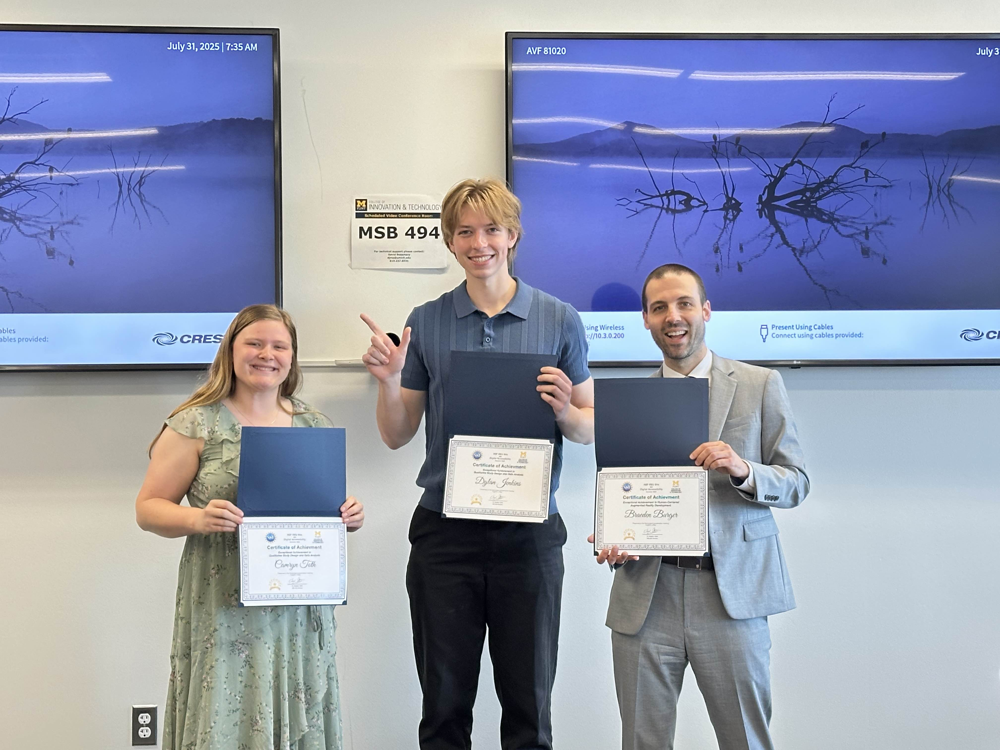

REU Research: Consent Experiences of Marginalized Online Daters
Research Mentor: Dr. Douglas Zytko
Co-contributors: Devin Tebbe, Dylan Jenkins, Meryem Barkallah, and Sylvia Sauden
Project Overview
During my summer Research Experience for Undergraduates at the University of Michigan–Flint, I focused on understanding the digital experiences of Deaf, Hard of Hearing, Visually Impaired, and Autistic adults as they navigate online dating. My work centered on how consent and sexual behavior are communicated and interpreted in these contexts. I collaborated closely with another undergraduate researcher, several graduate students, and a faculty mentor. Over the course of three related but evolving studies, I contributed to survey design, qualitative analysis, and participatory methods. The research is ongoing, and while we have begun to identify initial challenges and user needs, we have not yet reached final conclusions or published our findings. My contributions include analyzing interview data, deploying new surveys, and helping to conceptualize technology solutions for improving the online consent experience.
Problem Statement / Challenge
Online dating presents unique challenges for Deaf, Hard of Hearing, Visually Impaired, and Autistic adults, especially around intention & consent in digital interactions. How do marginalized users experience giving and receiving sexual consent online and what solutions can improve their experiences?
Process & Methods
- Project 1: Analyzed past experiences of deaf, hard of hearing, and visually impaired online daters via reflexive thematic analysis of survey data.
- Project 2: Survey design, data collection, and preliminary analysis for Autistic online daters.
- Project 3: Participatory design and survey for autistic adults about consent, technology solutions, and hypothetical scenarios.
Project Highlights
- Qualitative Analysis: Conducted reflexive thematic analysis of interview and survey data concerning Deaf, Hard of Hearing, and Visually Impaired online daters and their experiences with consent.
- Survey Design & Deployment: Crafted and administered a survey for autistic adults to gather data on their online dating and consent experiences via Qualtrics, then began data analysis using a Miro board for organization.
- Participatory Design: Developed a specialized survey to investigate autistic users’ perspectives on ideal consent scenarios, inviting feedback on hypothetical situations and technological solutions.
- Collaboration: Worked dynamically as project scopes shifted, adapted flexibly to new study directions, and actively contributed as part of a multi-level research team.
Lessons Learned
- Became comfortable managing multiple research foci and shifting timelines.
- Deepened my understanding of qualitative methodologies and the nuances of consent in technology-mediated interactions.
- Enhanced cross-disciplinary collaboration skills, learning to translate user needs into both research insights and real design recommendations.
Tools and Skills Used
Reflexive thematic analysis, qualitative survey creation and deployment, participatory design methods, collaboration with multi-level academic teams.